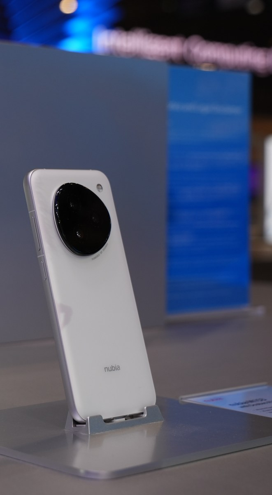
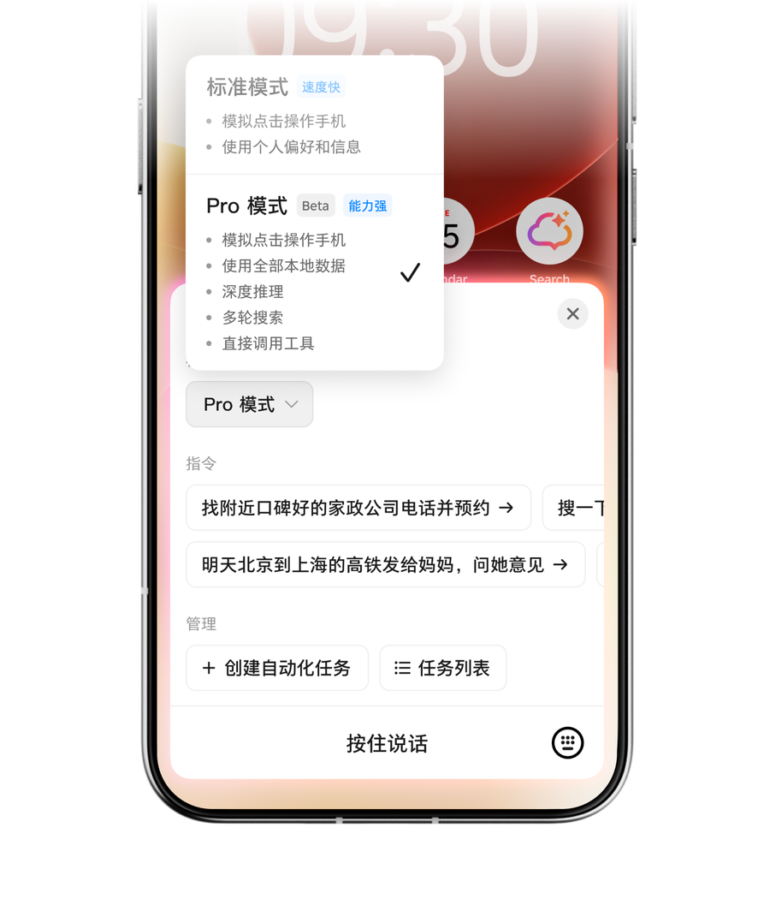

AI 时代的软件，到底是给人用，还是给 AI 用？
从豆包、AI 手机到千问，看软件入口如何变化 · 刘志宇 Joy
过去二十年，我们使用软件的顺序几乎没有变过。
想订酒店，先打开旅行应用；想做演示文稿，先打开办公软件；想报销，再去公司系统里找对应入口。人先选择软件，再学习菜单、按钮和流程。
AI 正在把这个顺序倒过来。
越来越多人不再先想该打开哪个应用，而是先打开豆包、千问或 DeepSeek，直接说出自己要做什么。
查资料、修图片、写方案、做演示文稿，原来分散在几个软件里的事情，开始从同一个入口出发。
当 AI 只负责回答问题时，这还只是搜索框换了一种样子。但当它开始订酒店、填表格、提交申请，问题就变了：它必须进入其他软件，读取真实数据，并调用那些原本藏在按钮后面的能力。
这会逼所有产品回答一个很现实的问题。
如果用户以后越来越少直接打开你的软件，你还应该继续把全部能力做成页面吗？如果任务会由 AI 发起，你又该把什么交给 AI，什么必须留给人？
这个问题已经不是未来预测。
QuestMobile 统计显示，2026 年 6 月，豆包、千问和 DeepSeek 的月活用户分别约为 3.82 亿、1.67 亿和 1.29 亿。
用户已经在用脚投票，只是变化并没有按照硅谷发布会里的方式发生。
真正先跑出来的，不是聊天框里的自动付款，而是一个新的任务入口。
理解这个入口，才能看清接下来软件会变成什么样。
01
用户先选择了一个新的超级入口
豆包现在的产品形态很有代表性。
它的应用介绍里同时列着问答、搜索、修图、写作、翻译、演示文稿和语音通话，还增加了办公任务模式与购物助手。
用户不必先判断应该打开文档、图片还是视频应用，只要说出目标，豆包再决定调用哪种能力。
这里真正改变的不是功能数量，而是使用软件的起点。
过去是先选应用，再找功能；现在是先进入 AI，再表达目标。
QuestMobile 把豆包的方向概括为模型智能体化的执行落地，因为它正在从回答问题走向交付文档、表格、图片、视频和办公任务。
当然，豆包还不能可靠操作所有软件。很多任务仍然发生在它自己的界面里，跨平台执行也会遇到登录、权限、数据格式和风控限制。
但产品习惯一旦形成，影响就会向外扩散。用户会逐渐期待所有软件都能听懂目标，而不是要求自己先学会每个系统的导航。
DeepSeek 提供了另一种对照。
它同样拥有巨大的用户规模，但用户更常在遇到难题时找它推理和回答。两者都属于 AI 助手，产品心智却已经分叉：DeepSeek 更接近认知入口，豆包开始争夺任务入口。
前者改变人们获得答案的方式，后者可能改变其他应用被发现和使用的方式。
02
为什么现在突然出现这么多 AI 手机
如果 AI 只负责写一段文字、修一张图片，做成普通 App 就够了。
但要替用户完成一件事，App 很快会碰到边界。它看不全其他应用里的状态，也不能稳定调用联系人、定位、相机、通知和支付，更不能随意跨过各个应用的权限沙箱。
这正是 AI 开始进入手机系统的原因。
手机是一个人最常随身携带的设备，也是数字生活里上下文最完整的地方。它知道时间和位置，连接相机、麦克风与通讯录，还装着支付、出行、购物和办公应用。
只有进入系统层，AI 才可能在用户授权后，把这些信息和能力串成一条任务。
努比亚 M153，也就是外界常说的豆包手机，是这个方向的早期样本。

图 1 · 努比亚 M153 豆包手机助手技术预览产品 · 图源：中兴通讯
它并不是字节跳动从头制造的一部手机。硬件由努比亚负责，豆包手机助手则与努比亚进行操作系统层面的合作。
中兴官方称，它可以理解自然语言指令，并跨应用完成搜索、比较、预订和导航等连续步骤。

图 2 · Pro 模式可使用本地数据、搜索并调用工具 · 图源：豆包手机助手官网
但这仍然是一台面向开发者和科技爱好者限量发售的技术预览产品。它证明了系统级智能体可以怎样工作，没有证明普通用户已经愿意把整部手机交给 AI。
现在市场上的 AI 手机也不是同一种东西。
第一类是在原有手机上增加修图、摘要、翻译和搜索，AI 只是更方便的功能。
第二类才是在重做操作系统的任务调度，让 AI 可以读取上下文、跨应用行动，并在端侧和云端之间分配计算。
手机厂商集体进入这一层，还有一个商业原因。
硬件参数越来越接近，单靠屏幕、相机和芯片很难长期拉开差距。谁掌握系统里的默认 AI，谁就可能决定用户先看到什么服务、调用哪个应用、在哪个平台完成交易。
对豆包来说，进入手机可以减少对其他系统入口的依赖。对手机厂商来说，如果把这一层完全交给外部模型，自己的操作系统很可能退化成硬件外壳。
所以这场竞争表面上在卖 AI 手机，实际争夺的是下一代软件入口。
不过，系统权限越大，风险也越集中。跨应用权限、长期记忆、隐私合规和失败后的责任，仍是当前 AI 手机最难解决的部分。
这也再次说明，AI 不能只获得能力。它还必须被限制在清楚、可撤销、可追踪的边界里。
03
千问把入口继续推进到了交易
千问走得更直接。
它当前的应用介绍不只写问答和办公，还列出了点外卖、订酒店、找餐厅和办理部分政务服务。
模型并没有突然学会送外卖。真正发生的是，阿里原有的电商、旅行、本地生活、支付和小程序服务，被重新组织成了 AI 可以调用的能力。
比如用户提出一个具体需求：今晚十点到杭州，希望找一家有停车场、能够延迟入住的酒店。
AI 负责理解时间、地点和偏好。旅行服务负责查询库存与价格，支付系统负责扣款，酒店系统负责生成订单和履约。
用户看到的是一句话完成一件事，背后仍是多个成熟系统在完成各自确定的工作。AI 没有取代这些软件，只是站到了它们前面。
这也解释了豆包和千问的差异。
豆包拥有巨大的用户入口，以及内容和多媒体能力。千问背靠阿里生态，已经连接大量交易和生活服务。
两家公司都在做 AI 应用，但它们最终能办成什么事，很大程度上取决于背后有哪些真实服务可以调用。
模型决定它能不能听懂，软件生态决定它能不能办完。
所以，AI 产品的竞争正在分成两层。前台争夺的是谁更容易让用户表达目标，后台争夺的是谁拥有更多可以被稳定执行的服务。
04
即时结账没有普及，但仍是一个好样本
这时再看 OpenAI 的即时结账，它的位置就清楚多了。
2025 年发布时，这项功能只从美国 Etsy 卖家和单件商品开始。OpenAI 没有公开它单独的使用规模，因此不能用它证明人们已经习惯在聊天框里购物。
它的价值不在用户规模，而在于把系统边界展示得很清楚。
用户可以在 ChatGPT 里发现商品、确认订单和付款信息。但库存、支付、履约、退货和客服，仍由商家原来的系统处理。
ChatGPT 没有成为订单数据库，也没有接管商家。它只是获得了发起交易的入口。
第三方应用又补上了界面。
Booking.com 可以在对话里返回酒店卡片，Zillow 可以返回房源地图，Canva 可以返回可以继续编辑的演示文稿。
用户先用语言提出目标，到了比较、选择和修改的时候，图形界面再出现。
这个方向同样处在早期。但它至少说明了一件事：AI 成为入口，不代表所有产品最后只剩一个聊天框。
把豆包、千问和 ChatGPT 放在一起看，它们代表三种不同的组合。
豆包先占据通用入口，再扩大任务能力；千问利用现成生态，把入口连接到交易；ChatGPT 则尝试让外部开发者把能力和界面一起送进 AI 宿主。
05
不是每个产品都应该去做下一个豆包
通用 AI 入口是一场极其昂贵的竞争。
它需要模型、分发、语音、多模态、长期记忆和终端入口，还需要足够多的内容与服务生态。大多数软件公司没有必要在首页复制一个聊天框，然后假装自己也在做超级助手。
更现实的选择，是先判断自己的产品处在哪一层。
如果做的是通用助手，用户每天直接打开你，产品重点确实是对话、语音、记忆、任务编排和生态连接。豆包、千问和 ChatGPT 争夺的是这一层。
如果做的是酒店、外卖、票务、支付、企业审批这类服务，价值不在聊天入口，而在库存、规则、价格、订单和履约。
这类产品应该让 AI 能理解并调用自己的核心能力，同时保留账户、状态、风控、售后和品牌关系。即使入口发生变化，业务事实仍然由自己的系统保存。
如果做的是设计、财务、开发和数据分析这类专业工具，原来的界面更不会消失。
画布、表格、时间线和代码编辑器都比聊天更适合精细工作。AI 可以读取上下文、执行重复步骤、生成初稿，但人仍然需要一个稳定的工作台完成检查、修改和追责。
这三层并不冲突。
一个专业工具可以同时拥有自己的工作台、供内部 AI 使用的动作层，以及供外部助手调用的服务入口。
真正需要避免的是把三层混在一起。既没有豆包的入口规模，也没有专业工具的操作深度，只多了一个什么都能问、什么都做不稳的聊天框。
06
普通产品怎么开始：先改造一条任务
拿一款采购软件举例。
用户现在要打开资产目录、预算系统、供应商列表和审批页面，才能给新设计师申请一台电脑。
如果团队先做一个万能助手，模型就要猜每个页面的字段和顺序。页面一改、弹窗一多，任务很快就会卡住。
第一步不是选模型，而是跟着一张已经完成的采购单走到底。
团队需要写清楚这张采购单查过哪些数据，在哪一步比较方案，谁能批准，什么动作会产生真实影响。
最后得到的不是一张页面清单，而是一条任务链：查政策、查预算、找商品、创建草稿、预览影响、提交审批、查询状态。
第二步，只开放查询和草稿能力。
AI 可以读取政策、核对预算、搜索商品并填写申请，但不能真正提交。团队先观察用户最常补充什么信息，AI 最容易误解哪个字段，人工接管发生在哪里。
这个阶段即使失败，也只是一张草稿不完整，不会真的多买一台电脑。
第三步，只在两个时刻做界面。
比较电脑时，返回价格、配置、交付时间和预算影响；提交审批时，显示最终金额、成本中心、收货人和审批链。
其他信息收集和页面跳转交给 AI。界面只负责文字不擅长的比较，以及人必须承担责任的确认。
最后再开放有限执行。
AI 使用独立身份，只获得本次任务需要的权限。每次写入都带防重复标识，提交后返回可以查询的状态。
低于限额、规则明确的申请可以自动送审。超预算、修改收货人或删除记录时，再请人处理。
上线后也不要只看回答是否自然。更应该记录任务一次完成率、人工接管位置、重复操作、失败恢复率和总耗时。
如果未来要接入不同 AI 客户端，再用 MCP 等协议把这些动作暴露出去。
协议解决怎么连接，前面的任务拆解解决连接什么。顺序反过来，通常只会得到一批可以被调用，却很难被正确使用的接口。
07
到底给谁用，要分层回答
回到最开始的问题：软件到底应该给人用，还是给 AI 用？
答案不是二选一，而是分层。
豆包这类入口产品首先给人用，因为人要在这里表达目标。
酒店、票务和企业服务会越来越多地给 AI 调用，因为任务会从入口流进来。
专业软件仍然要给人保留稳定界面，因为精细判断和责任不会消失。
即时结账没有证明页面即将消失。它与豆包、千问共同证明的是，软件的入口、界面和能力正在分开。
对大多数产品，真正可行的形态只有三件事：AI 能调用核心能力，人能在关键时刻看见并接管，业务系统始终保存真实状态。
所以，最先值得重做的不是首页。
是用户真正想完成的那条任务。
— 完 —
#AI应用 #产品设计 #智能体 #软件架构
参考链接
QuestMobile：2026 年 AI 应用市场发展半年报
https://www.questmobile.com.cn/research/report/2076954943839809537/
豆包：中国区应用商店产品介绍
https://apps.apple.com/cn/app/id6459478672
千问：中国区应用商店产品介绍
https://apps.apple.com/cn/app/id6466733523
豆包手机助手：官方网站
https://o.doubao.com/
中兴通讯：努比亚 M153 与豆包手机助手
https://www.zte.com.cn/global/about/news/As-an-AI-Native-Phone-Pioneer-nubia-Reshapes-the-Paradigm-of-Human-Device-Interaction-at-MWC-Barcelona-2026.html
OpenAI：在 ChatGPT 中购买商品
https://openai.com/index/buy-it-in-chatgpt/
OpenAI：ChatGPT 中的第三方应用
https://openai.com/index/introducing-apps-in-chatgpt/
模型上下文协议：工具规范
https://modelcontextprotocol.io/specification/2025-11-25/server/tools